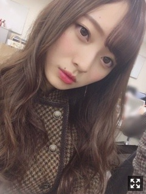
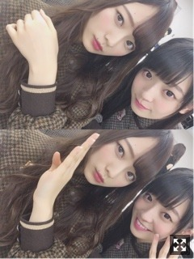
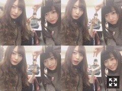
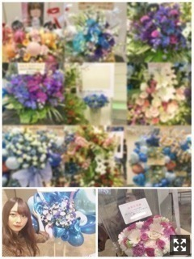
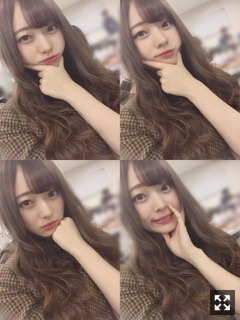

ずっと寒くていいのになあ。梅澤美波
みなさまこんにちは！！
乃木坂46 ３期生の
梅澤美波です！！
今日はなんだか長くなります

きのうのわれです
明けましておめでとうございます！！
そして新成人の皆様
おめでとうございます！！
乃木坂46からは
星野さん、樋口さん、川後さん、れなさん、伊織さん、かえで
振袖素敵だったなあ(；；)
年始の時のお話を少し！
私の２０１８年になった瞬間は
玄関の鏡の前でした（笑）
紅白歌合戦から帰宅して
地元に帰るから服を何にしようかな〜って
鏡の前で考えていたら
テレビから
｢２０１８年になりました〜明けましておめでとうございます〜｣
て聞こえてきて
ポカーンとなりました（笑）
１人の年越しは初めてだった☺︎（笑）
いつもと変わらず２０１８年になった瞬間を過ごすのも
まあ私らしいし良いかなって◎（笑）
ポジティブに生きたいね〜！
お正月は実家に帰って
ゆっくりまったりしてました！
お寿司食べたり焼肉食べたり蟹食べたり
毎年恒例楽しみの格付けチェック見たり
幸せでした☺︎
(ちなみにお餅は２個でおさめました
(ちなみに２つとも醤油海苔です
２０１８年の目標は
たくさん笑うことです！
目標何にしようかな〜って考えた時
夢や具体的な目標は沢山すぎるくらい今の私は抱えているけど
１番大切なことなのではないかなと思いまして！
やりたいこと出来ればきっとその時はめちゃくちゃ笑っていると思うし
夢が叶えばそのときもめちゃくちゃ笑っていると思うし！
笑ってポジティブでいれば
良いことが舞い込んでくるって
ある方が教えてくれたから。
２０１７年は笑顔を忘れたこともあったから
常に笑っていたい！
モデルさんのお仕事したいとか
たくさんありますが
夢は常におっきく持っています☺︎
そして私事ですが
１９歳になりました！
子供の頃描いてた１９歳って
ものすごく大人なんだろうな〜って思っていたんだけど
今なってみてそうでもないなって（笑）
これ毎年言ってる気がするけど( ¨̮ )
ラスト１０代なので
子供心忘れずにいつつ、
楽しむ時はとことん楽しんでふざけるときは思いっきりふざけてメリハリつけつつ
大人に近づけるように少しずつ準備していけたらいいなあ
２０１８年は
余裕があって落ち着いてるような
何事も焦らず行動できるような
お姉さんになりたいなあ（笑）
大人の女性目指して！！
美容についてももっと勉強する年にする！
あとは人見知り治します、
緊張すると全然話せないし
お話できる機会があっても人見知りだとガクガクだからなあ(；；)
３０日に放送されました
日本レコード大賞受賞、
おめでとうございます！！
先輩方の姿や涙をテレビの前で観ていて
涙が止まらなくなって
このグループにいられて本当に幸せだなって
活動できて幸せだなって思いました
パフォーマンスが本当にかっこ良くて
キラキラしてて
圧巻でした。本当に素敵だった(；；)
今後もグループの１人として
努力感謝笑顔忘れず頑張っていきます！
先輩方と一緒に坂を登っていきたい！！
そして
紅白歌合戦、出演させて頂きました！
去年も一昨年もテレビの前で見ていました
今年はテレビに出る側に、
なんだか信じられないけど
凄くありがたいです。
今までのインフルエンサーで
１番のものが踊れました！(；；)
おっきくパフォーマンスするのを心がけました！
錚々たる方々を目の前に
その場に私がいられたことにも
こうして出演させていただいたことにも
ものすごく幸せを感じました
本当にありがとうございました！
毎日毎日すごいことばかりが
私の身に起っていく
それくらい大きなグループなんだなって
グループの名前に負けないように
私も頑張らなきゃって常に刺激されます

楽屋ではいつも隣にきますかわいいです
たまみに冷たくすると可愛んだよね（笑）
拗ねるのが可愛いんだよ〜（笑）
うめ〜って来るんだよいつも
何も気を遣わない人ができるのって
すごいことだと思うんだ〜
まだ出会って１年ちょっとなのに
私にとって奇跡みたいな存在( ¨̮ )
たまみから誕生日にもらったお手紙
内容が本当にものすごく嬉しくて
握手会帰り涙こらえながら読んでた☺︎（笑）
可愛い妹です！
先日行われた全国握手会、
６日インテックス大阪
８日幕張メッセ
ありがとうございました！！
本当にたくさんの方が！！
幸せでした！！
昨日の幕張メッセでは
失恋お掃除人初披露！
ダンスがシュールと
かっこいいのダブルパンチで最高だし
曲も最強に好きすぎて
やっと披露できて嬉しかた〜(；；)
ちなみに今年初仕事は若様軍団で
その後軍団長若様がご飯連れてってくれて
とても幸せだったよ☺︎
僕の衝動も曲もダンスも大好き！
踊っていて心から楽しい！
久しぶりにあんなに汗かいたなあ( .. )
ペアはれんか！
テンションが一緒だし
れんかファンの方もみんな優しいし
私のファンの方も相変わらず優しいし
最後まで楽しめましたっ☺︎

つまみれんか
ジャーンしすぎてて面白かった
そして私も巻き添いくらってジャーンしておもろかった
結局たのしかった
６日は誕生日当日で
たくさんの方にお祝いしてもらいました、幸せでした！
握手会と誕生日が重なることなんて
アイドル人生でもうあるか分からないし
大切に１日を過ごしました！
ペアは初のでん！！
初めての握手会が４／１にインテックス大阪で行われた全国握手会で
その時想像できなかったくらい
たくさんの方が来てくださって、
なんだか感慨深かったです。
応援してくださるファンの方が増えたことが身に染みて感じられる場でした！
なんだかんだみんなよそ見したりするけど（笑）、最終的には私のとこにいてくれる、それが嬉しいんです。☺︎
みなみんのおかげで仕事頑張れてる！とか
本当にこちらのセリフなのに(；；)
ずっと立ちっぱなしだし
疲れてるだろうに私の心配をしてくれたり
みんな優しすぎかよ！なんなんだよ！
って思うくらい( .. )
ファンの方達から素敵な言葉をかけられると
涙出そうなるんだよね！（笑）
言葉一つ一つが本当に優しいんだよね！（笑）
メイク崩れて顔ボロボロになるのやだから
がんばってたえるんだけどね！（笑）
いつもはそっけないけど本当はめちゃくちゃ私の事考えてくれてるちょっとツンデレ気味なファンの方とかいるの知ってるし、（笑）
いつも私の体調気遣ってくれて水飲んでいいよ、とか言ってくれるファンの方とか
謎のハイテンションできてくれて私を笑わせようと必死でボケたりいじったり連番でネタやったりしてくれるファンの方とか
恥ずかしがり屋さんでうまく話せないけどすごく私の事好きでいてくれてるんだろうな〜って見てわかるファンの方とか
色んなファンの方がいて私は幸せでいっぱい！
これからもたくさんありがとうさせて下さい！
誕生日当日はお花が
今までで１番たくさんあって
本当に嬉しかった(；＿；)
一つ一つ全部見ました！！

載せきれないので選んでもらったランダムの写真でぼかし入れさせて下さいすみません(；＿；)
この他にも数え切れないくらいたくさん！
下の二つは昨日の！！
嬉しかったです(；；)♡
また会いに来てね( ˙-˙ )౨
告知◎
〜雑誌
▽EX大衆 さま ソログラビア
▽B.L.T. さま ３期生振袖カレンダー
▽OVERTURE さま 梅桃グラビア
▽アップトゥボーイ さま 別紙未公開カット
発売中です！
▽BUBKA さま ソログラビア
発売日わかり次第お知らせします！
▽横浜ウォーカー さま
こちらは２度目の登場させていただきました！かりんさんの連載にお邪魔して、、☺︎
発売日分かり次第お知らせします！
〜ラジオ
▽１／１４ 乃木坂46の『の』
樋口さんと秋元さんと私での登場です！３度目の乃木のの、とても緊張しましたが楽しかった〜ぜひ聴いてください◎
〜握手会
▽１／２０ 全国握手会@ポートメッセなごや
▽１／２１ 個別握手会@ポートメッセなごや
▽１／２８ 個別握手会@東京ビッグサイト
お待ちしています☺︎
最近のお話を少し☺︎
先日、舞台｢ピカレスク♢セブン｣
観に行ってきました☺︎
自分と重ね合わせてしまう部分とか
一つ一つのセリフが自分に言われてるって思うくらい心に突き刺さってきて
すごくドキッとしました
心が苦しくなるくらい
胸がいっぱいになった！
本当にめちゃくちゃ面白かった(；；)
もう一回観たい(；；)
プリンシパルでお世話になった
大高さんも出演されていて
久々にご挨拶できました！
大高さん本当にかっこよくて！(；；)
見殺し姫の時のことも褒めてくれたり、
今でも３期生を見てくださる本当に３期生のパパみたいな方です( .. )
またご一緒できたらいいなあ(；；)
そしてそして
１／２に放送された
発掘！お宝ガレリア観ていただけましたか？
久保ちゃんと島根の松江城に
行ってまいりました！
たくさんの歴史に触れた１日、
とても楽しみながら学ばせていただきました☺︎
テレビ見て全然まだまだだなって思う部分が多かったので
また機会があればもっと成長した姿をお見せできるよう勉強します！
島根で見ました！！
２人でのロケ、とっても楽しかった！
くぼくぼ舞台がんばれ〜たのしみ☺︎

はい
どうぞ
だいぶふざけてますが（笑）
今日はこの顔でばいばい
おやすみみんな〜
ゆっくり眠れよ〜
加入当時を思い返すと良い意味で変わった部分もあって、
今まで悔しいって思ったことの感情が今の私の原動力になってたり
昔を思い返す時間ってとても大切だなあ、今を振り返ったとき満足できてるように過ごしたいです☺︎
みんな今週もがんばろな〜
Original：https://www.nogizaka46.com/s/n46/diary/detail/42778?ima=0516&cd=MEMBER